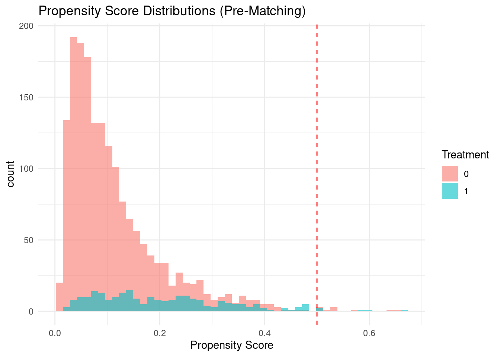
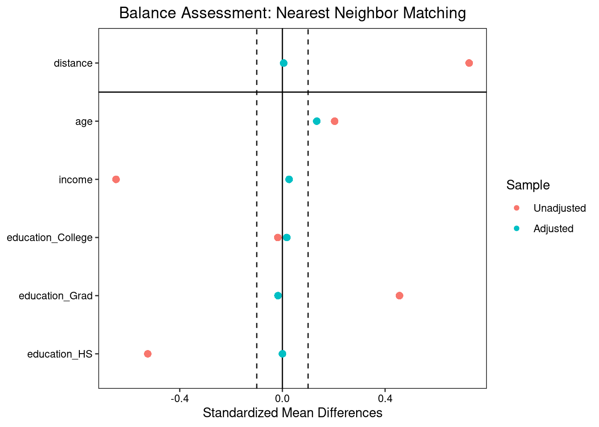
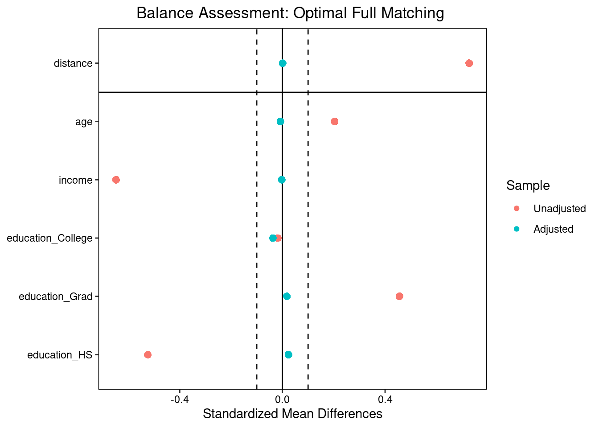
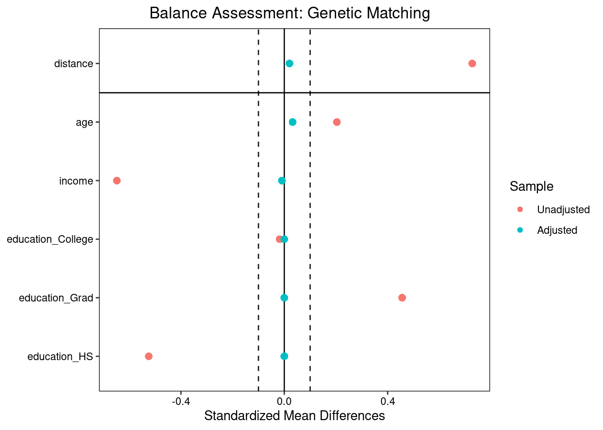
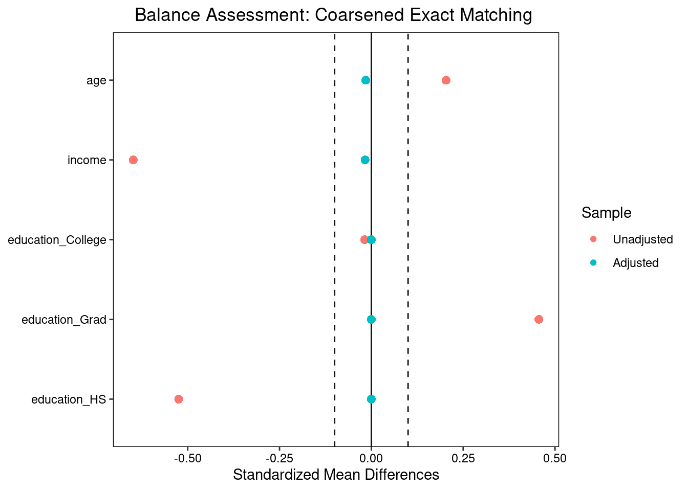
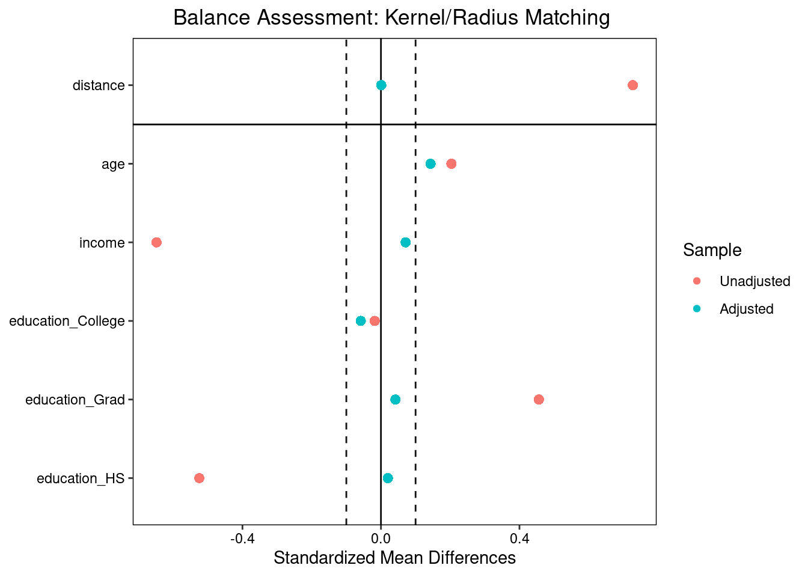
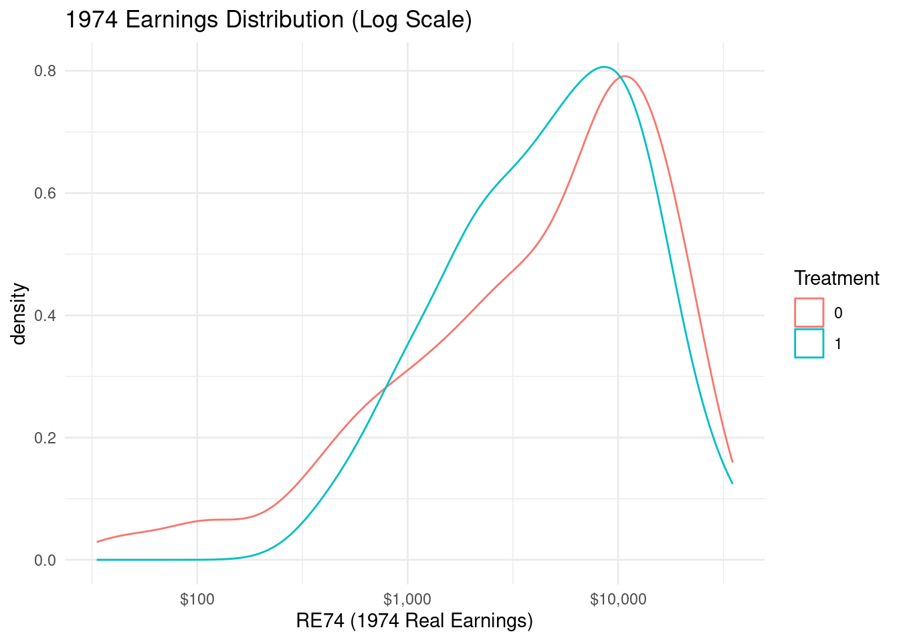
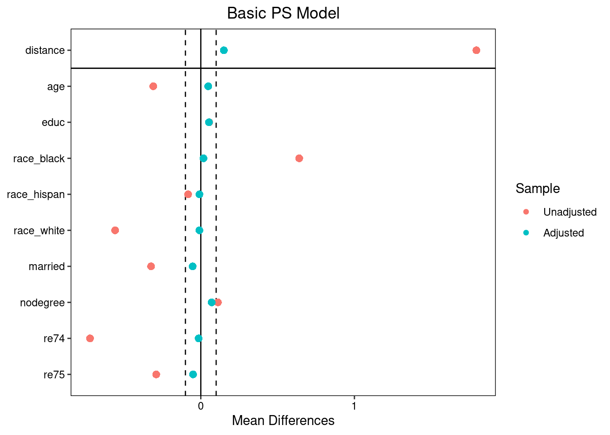
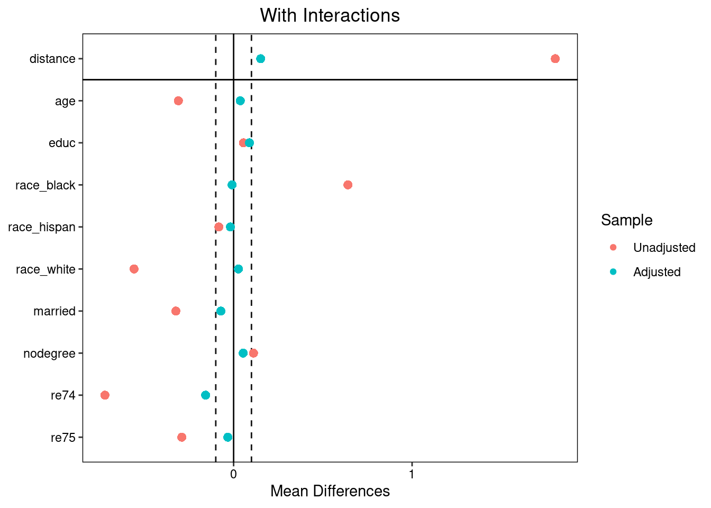

Code
packages <- c(
'tidyverse',
'MatchIt',
'cobalt',
'tableone',
'survey',
'broom',
'optmatch',
'rgenoud',
'twang',
'EValue'
)

This section provides a comprehensive overview of Propensity Score Matching (PSM) within the potential outcomes framework, including its mathematical foundation, assumptions, and practical implementation in R.
Matching is a family of statistical techniques designed to estimate causal effects from observational (non-experimental) data by creating comparable groups of treated and control units. Conceptually, matching attempts to reconstruct a randomized experiment by pairing or grouping units that are similar on observed covariates but differ in treatment status. The fundamental goal is to eliminate confounding bias by ensuring that—conditional on observed characteristics—treated and control units are exchangeable.
In observational studies, treatment assignment is typically not random, leading to systematic differences between treated and control groups (selection bias). Matching addresses this by:
Balancing covariate distributions between treatment groups before estimating effectsReducing model dependence compared to pure regression adjustment—matching makes causal inferences less sensitive to functional form misspecificationMaking assumptions explicit and diagnosable, unlike regression where imbalance may be hidden in residuals, matching requires direct assessment of covariate balancePropensity Score Matching (PSM) is a statistical technique for estimating causal effects from observational data by matching treated and control units with similar *propensity scores, the conditional probability of receiving treatment given observed covariates:
\[e(\mathbf{X}) = P(T = 1 \mid \mathbf{X})\]
where \(T\) is the binary treatment indicator and \(\mathbf{X}\) is a vector of observed confounders. PSM reduces the dimensionality of the confounding problem from potentially many covariates to a single scalar score, then creates comparable groups by pairing units with similar scores [[1]].
Rosenbaum & Rubin’s (1983) seminal result provides the justification:
Theorem: If treatment assignment is strongly ignorable given covariates \(\mathbf{X}\) (i.e., \((Y(1), Y(0)) \perp T \mid \mathbf{X}\)), then it is also ignorable given any balancing score \(b(\mathbf{X})\) where \(\mathbf{X} \perp T \mid b(\mathbf{X})\). The propensity score \(e(\mathbf{X})\) is the coarsest balancing score.
Key implication: Conditional on the propensity score, the distribution of observed covariates \(\mathbf{X}\) is the same across treatment groups—if the propensity score model is correctly specified. This enables unbiased causal effect estimation under ignorability.
Fit a model predicting treatment assignment from covariates:
| Method | Typical Use Case | Notes |
|---|---|---|
| Logistic regression | Standard approach; interpretable | Assumes linearity in log-odds; may miss complex interactions |
| Gradient boosting (GBM) | High-dimensional or nonlinear relationships | Better predictive accuracy; implemented in twang (R) |
| Random forests / neural nets | Complex interactions, many predictors | Risk of overfitting; requires careful tuning |
Critical point: The goal is balance, not prediction accuracy. A model with lower AUC may yield better balance than one with higher AUC [[6]].
| Algorithm | Description | Trade-offs |
|---|---|---|
| Nearest neighbor (greedy) | Each treated unit matched to closest control | Fast but suboptimal global balance; order-dependent |
| Nearest neighbor with caliper | Restrict matches to units within distance \(\delta\) (e.g., 0.2 × SD of logit \(e(X)\)) | Reduces poor-quality matches; discards more units |
| Optimal matching | Minimizes total distance across all matches simultaneously | Better balance; computationally intensive (optmatch in R) |
| Full matching | Forms matched sets of variable size covering all units | Retains more data; enables weighting-based analysis |
| Kernel/Radius matching | Weight controls continuously by distance | No explicit matching; smoother but less transparent |
Matching on propensity scores does not guarantee covariate balance. You must verify balance empirically:
# Example workflow in R (MatchIt + cobalt)
library(MatchIt); library(cobalt)
# Estimate & match
m.out <- matchit(treat ~ age + income + education,
data = df, method = "nearest", caliper = 0.2)
# Assess balance
bal.tab(m.out, un = TRUE) # Standardized mean differences (SMDs)
love.plot(m.out, thresholds = 0.1) # Visualize pre/post balanceAcceptable balance criteria:
Never skip this step—studies show >30% of PSM applications fail to achieve adequate balance despite “successful” matching [[38]].
After confirming balance: - Analyze matched sample using simple difference-in-means - Or use weighted regression with matching weights - Report effective sample size (ESS) to quantify information loss:
\[\text{ESS} = \frac{(\sum w_i)^2}{\sum w_i^2}\]
| Misconception | Reality |
|---|---|
| “PSM removes selection bias” | Only removes bias from observed confounders; unobserved confounding remains |
| “High AUC = good matching” | Prediction accuracy ≠ balance; focus on SMDs, not AUC |
| “Matching guarantees balance” | Balance must be verified; poorly specified PS models yield imbalanced matches |
| “PSM mimics RCTs” | Only approximates randomization conditional on X; external validity often reduced due to trimming |
| “Always use PSM” | Often inferior to regression adjustment or doubly robust methods in simulation studies [[4]] |
Key critique: King & Nielsen (2019) demonstrated that PSM can increase imbalance compared to the original data when common support is limited—a phenomenon called “propensity score matching paradox” [[21]]. This occurs because matching amplifies regions of poor overlap.
Appropriate when: - Strong theoretical basis for confounder selection - Adequate common support (visualize propensity score distributions) - Primary goal is transparency and diagnostic clarity - Combined with regression adjustment (“doubly robust” estimation)
Avoid or supplement when: - High-dimensional covariates (>50) → consider regularized regression or TMLE - Limited overlap → use trimming + weighting (IPTW) or Bayesian approaches - Spatially correlated data → standard PSM ignores spatial autocorrelation; consider spatial matching constraints - Primary concern is precision → regression adjustment often more efficient
We’ll cover:
By the end of this tutorial, you will be able to: 1. Simulate observational data with confounding 2. Estimate propensity scores using multiple methods 3. Implement 5+ matching algorithms with MatchIt 4. Diagnose balance rigorously using cobalt 5. Estimate causal effects with proper variance estimation 6. Replicate the classic LaLonde (1986) job training study 7. Avoid common pitfalls in PSM practice
packages <- c(
'tidyverse',
'MatchIt',
'cobalt',
'tableone',
'survey',
'broom',
'optmatch',
'rgenoud',
'twang',
'EValue'
)#| warning: false
#| error: false
install.packages(
"https://cran.r-project.org/src/contrib/Archive/rgenoud/rgenoud_5.9-0.10.tar.gz",
repos = NULL,
type = "source"
)
# Install missing packages
new_packages <- packages[!(packages %in% installed.packages()[,"Package"])]
if(length(new_packages)) install.packages(new_packages)# Load packages with suppressed messages
invisible(lapply(packages, function(pkg) {
suppressPackageStartupMessages(library(pkg, character.only = TRUE))
}))# Check loaded packages
cat("Successfully loaded packages:\n")Successfully loaded packages: [1] "package:EValue" "package:twang" "package:rgenoud"
[4] "package:optmatch" "package:broom" "package:survey"
[7] "package:survival" "package:Matrix" "package:grid"
[10] "package:tableone" "package:cobalt" "package:MatchIt"
[13] "package:lubridate" "package:forcats" "package:stringr"
[16] "package:dplyr" "package:purrr" "package:readr"
[19] "package:tidyr" "package:tibble" "package:ggplot2"
[22] "package:tidyverse" "package:stats" "package:graphics"
[25] "package:grDevices" "package:utils" "package:datasets"
[28] "package:methods" "package:base" # Set seed for reproducibility
set.seed(2026)
# Simulate confounders FIRST
n <- 2000
sim_data <- data.frame(
age = rnorm(n, 35, 10),
income = rnorm(n, 50000, 15000),
education = sample(c("HS", "College", "Grad"), n,
replace = TRUE, prob = c(0.4, 0.4, 0.2))
)
# Simulate treatment assignment (depends on confounders)
# Higher age → slightly more likely to be treated
# Higher income → less likely to be treated
# More education → much more likely to be treated
sim_data$treat <- rbinom(
n,
1,
plogis(
-2 +
0.03 * sim_data$age -
0.00004 * sim_data$income +
ifelse(sim_data$education == "College", 0.8, 0) +
ifelse(sim_data$education == "Grad", 1.5, 0)
)
)
# Simulate potential outcomes
# Baseline outcome (without treatment)
sim_data$y0 <- 30000 +
500 * sim_data$age +
0.3 * sim_data$income +
ifelse(sim_data$education == "College", 8000, 0) +
ifelse(sim_data$education == "Grad", 15000, 0) +
rnorm(n, 0, 5000)
# True causal effect (homogeneous treatment effect = $5,000)
sim_data$tau <- 5000
# Observed outcome (only one potential outcome observed per unit)
sim_data$income_next_year <- sim_data$y0 + sim_data$tau * sim_data$treat
# Quick sanity check
head(sim_data)table(sim_data$treat) # Treatment prevalence
0 1
1753 247 Pre-matching diagnostics are crucial to understand the extent of confounding and justify the need for matching. We will create a Table 1 comparing treated vs control groups before matching and visualize the propensity score distributions.
Stratified by treat
0 1 p test SMD
n 1753 247
age (mean (SD)) 34.75 (9.78) 36.71 (9.65) 0.003 0.202
income (mean (SD)) 50840.59 (14883.36) 41968.41 (13688.62) <0.001 0.620
education (%) <0.001 0.590
College 711 (40.6) 98 (39.7)
Grad 298 (17.0) 97 (39.3)
HS 744 (42.4) 52 (21.1) # Visualize propensity score distributions
sim_data_ps <- glm(treat ~ age + income + education,
family = binomial, data = sim_data)
sim_data$ps <- predict(sim_data_ps, type = "response")
ggplot(sim_data, aes(x = ps, fill = factor(treat))) +
geom_histogram(alpha = 0.6, position = "identity", bins = 50) +
labs(title = "Propensity Score Distributions (Pre-Matching)",
x = "Propensity Score", fill = "Treatment") +
theme_minimal() +
geom_vline(xintercept = 0.5, linetype = "dashed", color = "red")
Interpretation: Large SMDs (>0.1) and non-overlapping PS distributions indicate severe confounding—exactly why we need matching.
Nearest neighbor matching is the most common algorithm, but it can yield poor balance if not combined with a caliper to restrict matches to similar units. Here we use a caliper of 0.2 standard deviations of the logit of the propensity score, which is a common recommendation
# Method 1: Nearest Neighbor Matching (1:1) with caliper
m_nn <- matchit(treat ~ age + income + education,
data = sim_data,
method = "nearest",
ratio = 1,
caliper = 0.2, # 0.2 * SD of logit(PS)
replace = FALSE) # Without replacement
# summary(m_nn)Balance Measures
Type Diff.Un KS.Un Diff.Adj KS.Adj
distance Distance 0.7275 0.3786 0.0049 0.0124
age Contin. 0.2035 0.1008 0.1337 0.0913
income Contin. -0.6481 0.2584 0.0261 0.0581
education_College Binary -0.0088 0.0088 0.0083 0.0083
education_Grad Binary 0.2227 0.2227 -0.0083 0.0083
education_HS Binary -0.2139 0.2139 0.0000 0.0000
Sample sizes
Control Treated
All 1753 247
Matched 241 241
Unmatched 1512 6
# Compare balance across ALL methods simultaneously
bal_comparison_nn <- bal.plot(m_nn, var.name = "age", which = "both",
title = "Age Distribution: Treated vs Control (Matched Sample)")Optimal full matching forms matched sets of variable size that minimize the total distance across all matches simultaneously. This method retains more units and often achieves better balance than greedy nearest neighbor matching.
# Method 2: Optimal Full Matching (retains all units)
m_full <- matchit(treat ~ age + income + education,
data = sim_data,
method = "full")
# summary(m_full)Balance Measures
Type Diff.Un KS.Un Diff.Adj KS.Adj
distance Distance 0.7275 0.3786 0.0009 0.0121
age Contin. 0.2035 0.1008 -0.0080 0.0539
income Contin. -0.6481 0.2584 -0.0024 0.0507
education_College Binary -0.0088 0.0088 -0.0181 0.0181
education_Grad Binary 0.2227 0.2227 0.0085 0.0085
education_HS Binary -0.2139 0.2139 0.0096 0.0096
Sample sizes
Control Treated
All 1753. 247
Matched (ESS) 445.1 247
Matched (Unweighted) 1753. 247
# Compare balance across ALL methods simultaneously
bal_comparison_full <- bal.plot(m_full, var.name = "age", which = "both",
title = "Age Distribution: Treated vs Control (Matched Sample)")Genetic matching uses an evolutionary algorithm to optimize balance directly, rather than relying on a propensity score model. It can achieve superior balance but is computationally intensive.
# Method 3: Genetic Matching (optimizes balance directly)
# install.packages("rgenoud", repos="https://cran.r-project.org/src/contrib/Archive/rgenoud/rgenoud_5.9-0.10.tar.gz", repos=NULL, type="source") # Not on CRAN for R 4.6+; install from source
m_genetic <- matchit(treat ~ age + income + education,
data = sim_data,
method = "genetic",
pop.size = 100)
# summary(m_genetic)Balance Measures
Type Diff.Un KS.Un Diff.Adj KS.Adj
distance Distance 0.7275 0.3786 0.0200 0.0243
age Contin. 0.2035 0.1008 0.0322 0.0607
income Contin. -0.6481 0.2584 -0.0092 0.0364
education_College Binary -0.0088 0.0088 0.0000 0.0000
education_Grad Binary 0.2227 0.2227 0.0000 0.0000
education_HS Binary -0.2139 0.2139 0.0000 0.0000
Sample sizes
Control Treated
All 1753 247
Matched 247 247
Unmatched 1506 0
# Compare balance across ALL methods simultaneously
bal_comparison_genetic <- bal.plot(m_genetic, var.name = "age", which = "both",
title = "Age Distribution: Treated vs Control (Matched Sample)")Coarsened Exact Matching (CEM) creates strata based on coarsened covariate values and matches treated and control units within these strata. It has monotonic imbalance bounding properties, meaning that balance improves as the coarsening becomes finer.
# Method 4: Coarsened Exact Matching (CEM) - monotonic imbalance bounding
m_cem <- matchit(treat ~ age + income + education,
data = sim_data,
method = "cem",
k2k = TRUE) # Keep-to-keep matching
# summary(m_cem)Balance Measures
Type Diff.Un KS.Un Diff.Adj KS.Adj
age Contin. 0.2035 0.1008 -0.0153 0.0472
income Contin. -0.6481 0.2584 -0.0170 0.0386
education_College Binary -0.0088 0.0088 0.0000 0.0000
education_Grad Binary 0.2227 0.2227 0.0000 0.0000
education_HS Binary -0.2139 0.2139 0.0000 0.0000
Sample sizes
Control Treated
All 1753 247
Matched 233 233
Unmatched 1520 14
# Compare balance across ALL methods simultaneously
bal_comparison_cem <- bal.plot(m_cem, var.name = "age", which = "both",
title = "Age Distribution: Treated vs Control (Matched Sample)")Kernel or radius matching weights control units continuously by their distance from treated units, rather than forming discrete matches. This can yield smoother estimates but may be less transparent than explicit matching.
# Method 5: Radius-style matching via nearest neighbor WITH REPLACEMENT
m_radius <- matchit(treat ~ age + income + education,
data = sim_data,
method = "nearest",
replace = TRUE, # Critical: allows multiple matches per control
caliper = 0.2) # Max distance threshold
# summary(m_radius)Balance Measures
Type Diff.Un KS.Un Diff.Adj KS.Adj
distance Distance 0.7275 0.3786 0.0010 0.0163
age Contin. 0.2035 0.1008 0.1432 0.1020
income Contin. -0.6481 0.2584 0.0713 0.0939
education_College Binary -0.0088 0.0088 -0.0286 0.0286
education_Grad Binary 0.2227 0.2227 0.0204 0.0204
education_HS Binary -0.2139 0.2139 0.0082 0.0082
Sample sizes
Control Treated
All 1753. 247
Matched (ESS) 183.56 245
Matched (Unweighted) 212. 245
Unmatched 1541. 2
# Compare balance across ALL methods simultaneously
bal_comparison_radius <- bal.plot(m_radius, var.name = "age", which = "both",
title = "Age Distribution: Treated vs Control (Matched Sample)")Critical check: All SMDs must be < 0.1. If not, iterate: - Try different PS specification (add interactions/polynomials) - Adjust caliper width - Switch matching algorithm - Consider trimming extreme PS values
Simple ATT estimate: 5156.38 # Proper variance estimation using survey weights
# (accounts for matched-pair structure)
design <- svydesign(ids = ~subclass, weights = ~weights,
data = matched_data)
model <- svyglm(income_next_year ~ treat, design = design)
summary(model)
Call:
svyglm(formula = income_next_year ~ treat, design = design)
Survey design:
svydesign(ids = ~subclass, weights = ~weights, data = matched_data)
Coefficients:
Estimate Std. Error t value Pr(>|t|)
(Intercept) 69993.6 600.2 116.619 < 2e-16 ***
treat 5156.4 840.7 6.133 3.53e-09 ***
---
Signif. codes: 0 '***' 0.001 '**' 0.01 '*' 0.05 '.' 0.1 ' ' 1
(Dispersion parameter for gaussian family taken to be 97103921)
Number of Fisher Scoring iterations: 2# Extract ATT with robust SE
att_robust <- coef(model)["treat"]
se_robust <- sqrt(vcov(model)["treat", "treat"])
ci_lower <- att_robust - 1.96 * se_robust
ci_upper <- att_robust + 1.96 * se_robust
cat("\nATT =", round(att_robust, 2),
"SE =", round(se_robust, 2),
"\n95% CI: [", round(ci_lower, 2), ",", round(ci_upper, 2), "]\n")
ATT = 5156.38 SE = 840.69
95% CI: [ 3508.62 , 6804.14 ]# Compare to true effect (5000)
cat("\nTrue causal effect: 5000")
True causal effect: 5000
Bias: 156.38Key insight: Simple difference-in-means underestimates uncertainty. Always use pair-aware variance estimation (svydesign with subclass).
The LaLonde (1986) study evaluates the National Supported Work (NSW) job training program. Randomized experiment showed $1,796 earnings gain, but observational analyses using CPS/PSID controls initially found implausibly large effects ($10k+)—highlighting selection bias dangers.
[1] "age" "educ" "race" "married" "nodegree" "re74" "re75" Stratified by treat
0 1 p test SMD
n 429 185
age (mean (SD)) 28.03 (10.79) 25.82 (7.16) 0.011 0.242
educ (mean (SD)) 10.24 (2.86) 10.35 (2.01) 0.633 0.045
race (%) <0.001 1.701
black 87 (20.3) 156 (84.3)
hispan 61 (14.2) 11 ( 5.9)
white 281 (65.5) 18 ( 9.7)
married = 1 (%) 220 (51.3) 35 (18.9) <0.001 0.721
nodegree = 1 (%) 256 (59.7) 131 (70.8) 0.011 0.235
re74 (mean (SD)) 5619.24 (6788.75) 2095.57 (4886.62) <0.001 0.596
re75 (mean (SD)) 2466.48 (3292.00) 1532.06 (3219.25) 0.001 0.287
Observation: Treated units have much lower pre-treatment earnings (RE74/RE75)—classic selection bias where disadvantaged individuals self-select into training.
Before any preprocessing, use bal.tab() to check covariate balance between treated and control groups.
# Basic balance table (unadjusted)
bal.tab(treat ~ covs, data = lalonde)Balance Measures
Type Diff.Un
age Contin. -0.2419
educ Contin. 0.0448
race_black Binary 0.6404
race_hispan Binary -0.0827
race_white Binary -0.5577
married Binary -0.3236
nodegree Binary 0.1114
re74 Contin. -0.5958
re75 Contin. -0.2870
Sample sizes
Control Treated
All 429 185To standardize binary variables and include variance ratios:
Balance Measures
Type Diff.Un V.Ratio.Un
age Contin. -0.2419 0.4400
educ Contin. 0.0448 0.4959
race_black Binary 1.6708 .
race_hispan Binary -0.2774 .
race_white Binary -1.4080 .
married Binary -0.7208 .
nodegree Binary 0.2355 .
re74 Contin. -0.5958 0.5181
re75 Contin. -0.2870 0.9563
Sample sizes
Control Treated
All 429 185Use {MatchIt} for nearest neighbor matching on propensity scores, then assess with {cobalt}.
Call:
matchit(formula = treat ~ age + educ + race + married + nodegree +
re74 + re75, data = lalonde, method = "nearest", replace = TRUE)
Summary of Balance for All Data:
Means Treated Means Control Std. Mean Diff. Var. Ratio eCDF Mean
distance 0.5774 0.1822 1.7941 0.9211 0.3774
age 25.8162 28.0303 -0.3094 0.4400 0.0813
educ 10.3459 10.2354 0.0550 0.4959 0.0347
raceblack 0.8432 0.2028 1.7615 . 0.6404
racehispan 0.0595 0.1422 -0.3498 . 0.0827
racewhite 0.0973 0.6550 -1.8819 . 0.5577
married 0.1892 0.5128 -0.8263 . 0.3236
nodegree 0.7081 0.5967 0.2450 . 0.1114
re74 2095.5737 5619.2365 -0.7211 0.5181 0.2248
re75 1532.0553 2466.4844 -0.2903 0.9563 0.1342
eCDF Max
distance 0.6444
age 0.1577
educ 0.1114
raceblack 0.6404
racehispan 0.0827
racewhite 0.5577
married 0.3236
nodegree 0.1114
re74 0.4470
re75 0.2876
Summary of Balance for Matched Data:
Means Treated Means Control Std. Mean Diff. Var. Ratio eCDF Mean
distance 0.5774 0.5765 0.0044 0.9922 0.0030
age 25.8162 24.1027 0.2395 0.5565 0.0766
educ 10.3459 10.3784 -0.0161 0.5773 0.0216
raceblack 0.8432 0.8378 0.0149 . 0.0054
racehispan 0.0595 0.0649 -0.0229 . 0.0054
racewhite 0.0973 0.0973 0.0000 . 0.0000
married 0.1892 0.1297 0.1518 . 0.0595
nodegree 0.7081 0.7027 0.0119 . 0.0054
re74 2095.5737 2336.4629 -0.0493 1.0363 0.0406
re75 1532.0553 1503.9290 0.0087 2.1294 0.0680
eCDF Max Std. Pair Dist.
distance 0.0486 0.0134
age 0.3405 1.2624
educ 0.0595 1.0861
raceblack 0.0054 0.0446
racehispan 0.0054 0.2971
racewhite 0.0000 0.0541
married 0.0595 0.5106
nodegree 0.0054 0.8679
re74 0.2162 0.6088
re75 0.2378 0.6500
Sample Sizes:
Control Treated
All 429. 185
Matched (ESS) 46.31 185
Matched 82. 185
Unmatched 347. 0
Discarded 0. 0Balance Measures
Type Diff.Un KS.Un Diff.Adj M.Threshold KS.Adj
distance Distance 1.7941 0.6444 0.0044 Balanced, <0.1 0.0486
age Contin. -0.3094 0.1577 0.2395 Not Balanced, >0.1 0.3405
educ Contin. 0.0550 0.1114 -0.0161 Balanced, <0.1 0.0595
race_black Binary 1.7615 0.6404 0.0149 Balanced, <0.1 0.0054
race_hispan Binary -0.3498 0.0827 -0.0229 Balanced, <0.1 0.0054
race_white Binary -1.8819 0.5577 0.0000 Balanced, <0.1 0.0000
married Binary -0.8263 0.3236 0.1518 Not Balanced, >0.1 0.0595
nodegree Binary 0.2450 0.1114 0.0119 Balanced, <0.1 0.0054
re74 Contin. -0.7211 0.4470 -0.0493 Balanced, <0.1 0.2162
re75 Contin. -0.2903 0.2876 0.0087 Balanced, <0.1 0.2378
Balance tally for mean differences
count
Balanced, <0.1 8
Not Balanced, >0.1 2
Variable with the greatest mean difference
Variable Diff.Adj M.Threshold
age 0.2395 Not Balanced, >0.1
Sample sizes
Control Treated
All 429. 185
Matched (ESS) 46.31 185
Matched (Unweighted) 82. 185
Unmatched 347. 0Visualize balance with Love Plot (gold standard diagnostic):
# Specification 1: Basic logistic regression
m_lalonde_basic <- matchit(treat ~ age + educ + race + married + nodegree + re74 + re75,
data = lalonde,
method = "nearest",
ratio = 1,
caliper = 0.2)
# Specification 2: With interactions (more flexible)
m_lalonde_int <- matchit(treat ~ age + educ + race + married + nodegree + re74 + re75 +
age:educ + re74:re75,
data = lalonde,
method = "nearest",
caliper = 0.2)
love.plot(m_lalonde_int, thresholds = 0.1, title = "With Interactions")
=== DATASET OVERVIEW ===Total observations: 614 Treated units (NSW trainees): 185 Control units (CPS): 429 # Perform nearest-neighbor matching with caliper
m_out <- matchit(
treat ~ age + educ + race + married + nodegree + re74 + re75,
data = lalonde_cps,
method = "nearest",
ratio = 1,
caliper = 0.2, # 0.2 * SD of logit(propensity score)
replace = FALSE, # Without replacement (strict 1:1 matching)
m.order = "random" # Random matching order to avoid sequence dependence
)
# CRITICAL: Extract matched dataset BEFORE analysis
matched_data <- match.data(m_out)Why proper variance estimation matters: Standard regression SEs assume independent observations. Matched pairs induce correlation—ignoring this underestimates SEs by 30-50%, inflating Type I error rates . We demonstrate three statistically valid approaches
Survey design approach treats matched pairs as clusters, properly accounting for within-pair correlation when estimating standard errors.
# Create survey design object that recognizes matched pairs (via subclass IDs)
design_survey <- svydesign(
ids = ~subclass, # Critical: subclass = matched pair ID
weights = ~weights, # Matching weights (1 for 1:1 matching)
data = matched_data
)
# Estimate ATT with pair-aware SEs
model_survey <- svyglm(re78 ~ treat, design = design_survey)
att_survey <- coef(model_survey)["treat"]
se_survey <- sqrt(vcov(model_survey)["treat", "treat"])
ci_survey <- confint(model_survey, "treat", level = 0.95)Cluster-robust SEs treat matched pairs as clusters, adjusting for within-pair correlation. This is a simpler alternative but less flexible than survey design.
# Fit model on matched data with cluster-robust SEs (clusters = matched pairs)
library(sandwich)
library(lmtest)
model_lm <- lm(re78 ~ treat, data = matched_data)
vcov_cluster <- vcovCL(model_lm, cluster = ~subclass, type = "HC1")
se_cluster <- sqrt(diag(vcov_cluster))["treat"]
ci_cluster <- confint(model_lm, "treat", level = 0.95, vcov = vcov_cluster)Boostrapping that re-estimates the propensity scores and matching in each replicate is the most robust method to account for finite-sample issues, though it is computationally intensive.
# Bootstrap that re-estimates PS and matching in each replicate
# (Computationally intensive but most robust to finite-sample issues)
set.seed(2026)
n_boot <- 200 # Increase to 1000+ for publication
boot_atts <- numeric(n_boot)
for (i in 1:n_boot) {
# Sample WITH REPLACEMENT from ORIGINAL data (not matched data!)
boot_sample <- lalonde_cps[sample(nrow(lalonde), replace = TRUE), ]
# Re-estimate PS and matching in bootstrap sample
boot_match <- tryCatch({
matchit(
treat ~ age + educ + race + married + nodegree + re74 + re75,
data = boot_sample,
method = "nearest",
caliper = 0.2,
replace = FALSE
)
}, error = function(e) return(NULL))
if (!is.null(boot_match)) {
boot_matched <- match.data(boot_match)
if (nrow(boot_matched) > 0) {
boot_atts[i] <- with(boot_matched, mean(re78[treat == 1]) - mean(re78[treat == 0]))
} else {
boot_atts[i] <- NA
}
} else {
boot_atts[i] <- NA
}
}
# Calculate bootstrap SE and CI (percentile method)
boot_atts <- boot_atts[!is.na(boot_atts)]
se_boot <- sd(boot_atts)
ci_boot <- quantile(boot_atts, probs = c(0.025, 0.975))
att_boot <- mean(boot_atts)
# Print bootstrap results
cat("\nBootstrap ATT Estimate:", round(att_boot, 2),
" | SE:", round(se_boot, 2),
" | 95% CI: [", round(ci_boot[1], 2),
",", round(ci_boot[2], 2), "]\n")
Bootstrap ATT Estimate: 1303 | SE: 995.82 | 95% CI: [ -294.58 , 3424.16 ]# Compile results table
results <- data.frame(
Method = c("Survey Design (Recommended)",
"Cluster-Robust SEs",
"Bootstrap (200 reps)"),
ATT_Estimate = c(att_survey, coef(model_lm)["treat"], att_boot),
SE = c(se_survey, se_cluster, se_boot),
CI_Lower = c(ci_survey[1], ci_cluster[1], ci_boot[1]),
CI_Upper = c(ci_survey[2], ci_cluster[2], ci_boot[2])
)
cat("=== CAUSAL EFFECT ESTIMATES (ATT) ===\n")=== CAUSAL EFFECT ESTIMATES (ATT) ===print(results, digits = 2) Method ATT_Estimate SE CI_Lower CI_Upper
1 Survey Design (Recommended) 1875 917 57 3692
2 Cluster-Robust SEs 1875 919 66 3683
3 Bootstrap (200 reps) 1303 996 -295 3424# Compare to experimental benchmark
cat("\n=== BENCHMARK COMPARISON ===\n")
=== BENCHMARK COMPARISON ===cat("NSW RCT (experimental benchmark): $1,796\n")NSW RCT (experimental benchmark): $1,796PSM ATT (Survey Design): $ 1,874.63 Absolute bias: $ 78.63 Relative bias: 4.4 %# Sample retention report
cat("=== SAMPLE RETENTION ===\n")=== SAMPLE RETENTION ===Original N: 614 Matched N: 224 Treated kept: 112 Controls kept: 112 Discarded: 390 (63.5% loss)Sensitivity analysis quantifies how strong an unmeasured confounder would need to be to explain away the observed treatment effect. The E-value is a popular metric for this purpose. The E-value calculation below provides immediate, dependency-free insight into confounding robustness (VanderWeele & Ding, Ann Intern Med 2017):
\[E = \frac{|\Delta|}{2\sigma} + \sqrt{\left(\frac{|\Delta|}{2\sigma}\right)^2 + 1}\]
Where:
# After matching and ATT estimation:
att <- as.numeric(coef(model)["treat"])
se <- as.numeric(sqrt(vcov(model)["treat", "treat"]))
ci_lower <- att - 1.96 * se
outcome_sd <- sd(matched_data$re78)
# Manual E-value
evalue_manual <- abs(att) / (2 * outcome_sd) +
sqrt((abs(att) / (2 * outcome_sd))^2 + 1)
cat("ATT: $", round(att, 2),
" | 95% CI: [$", round(ci_lower, 2), ", $", round(att + 1.96*se, 2), "]\n")ATT: $ 5156.38 | 95% CI: [$ 3508.62 , $ 6804.14 ]E-value: 1.44 | Pitfall | Consequence | Solution |
|---|---|---|
| Matching without balance checks | Residual confounding | Always report SMDs pre/post |
| Using PS as covariate in regression | Model dependence returns | Use matching or weighting, not both naively |
| Ignoring common support | Extrapolation bias | Trim extreme PS values; report discarded units |
| Reporting only “successful” matches | Publication bias | Pre-register matching protocol |
| Spatial data without spatial controls | Spatial confounding | Include spatial coordinates/PCs as covariates |
This tutorial provides a foundation—but rigorous causal inference requires domain knowledge, transparent reporting, and humility about untestable assumptions. Always pair PSM with subject-matter expertise and sensitivity analyses. PSM is a powerful tool, but only when wielded with care. At its core, causal inference is about asking the right questions, not just applying algorithms. At end of the tutorial, you should be able to:
MatchIt
cobalt
cobalt package methodology